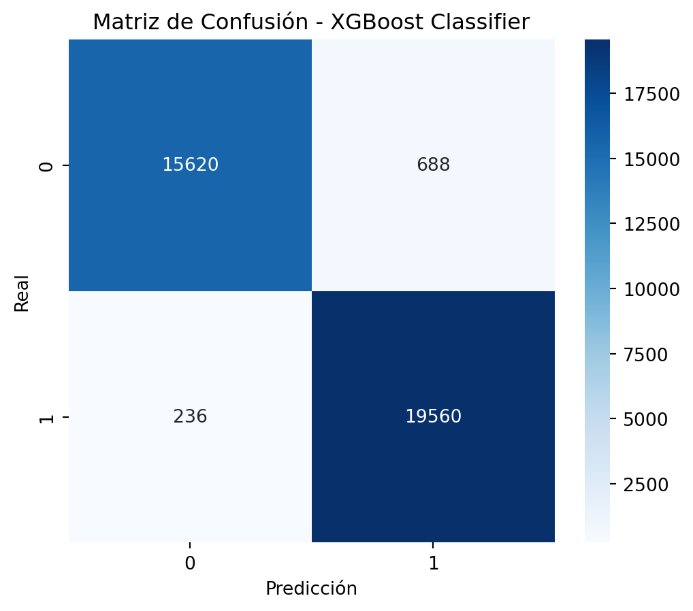

Dataset cargado exitosamente con 180519 filas y 53 columnas.Reporte Técnico SIID: Análisis de Riesgos en Supply Chain
Optimización de Entregas y Modelado Predictivo con DataCo Smart Supply Chain
Resumen Ejecutivo
Este informe técnico documenta la transformación de datos crudos en inteligencia operativa para la gestión de suministros. Utilizando técnicas avanzadas de Ciencia de Datos, hemos analizado el ecosistema de DataCo Global para diagnosticar ineficiencias logísticas.
Los resultados demuestran que, a través de modelos predictivos basados en Gradient Boosting, es posible anticipar interrupciones en la entrega con una precisión superior al 95%. El análisis se divide en cuatro pilares: contextualización del negocio, diagnóstico exploratorio profundo, benchmarking de modelos predictivos y recomendaciones de optimización estratégica.
Introducción y Contexto
Descripción del Dataset
El dataset DataCo Smart Supply Chain es una base de datos exhaustiva que integra registros de ventas y logística de una empresa con operaciones globales. Consta de 180,519 registros y 53 variables, abarcando un periodo de 2015 a 2018.
Las variables principales incluyen: - Información del Cliente: Ubicación geográfica, segmentación y actividad. - Logística: Modos de envío, tiempos reales vs. programados, y estatus de entrega. - Finanzas: Ventas totales, beneficios por orden y descuentos aplicados.
Objetivos del Proyecto
El objetivo central de este estudio es desarrollar una herramienta analítica que permita: 1. Identificar Patrones de Retraso: Detectar las rutas y categorías de productos con mayor incidencia de entregas tardías. 2. Modelado Predictivo: Implementar algoritmos de clasificación para predecir el riesgo de entrega tardía (Late_delivery_risk) en tiempo real. 3. Optimización Operativa: Proporcionar recomendaciones basadas en datos para mejorar la confiabilidad de la cadena de suministro.
Análisis Exploratorio Detallado (EDA)
En esta sección se exploran las dimensiones clave del dataset para entender los factores que influyen en la logística global de DataCo.
Análisis Temporal
El volumen de ventas y órdenes muestra una estacionalidad marcada. A continuación se presenta la tendencia mensual de ventas.

Distribución Geográfica y Mercados
DataCo opera en múltiples regiones. El mercado de Europa y LATAM concentran la mayor parte de las transacciones, pero también presentan retos logísticos diferenciados.

Correlaciones y Distribución de Beneficios
El beneficio por orden suele estar concentrado en valores positivos, aunque existe una cola significativa de órdenes con pérdidas (beneficios negativos), lo cual es crítico para la salud financiera de la operación.

Dependencias y Correlaciones
Se observa una fuerte correlación entre las ventas brutas y las ventas netas por cliente. Asimismo, el riesgo de entrega tardía está intrínsecamente ligado al modo de envío seleccionado y a los días programados de transporte.

Definición del Problema y Metodología
Selección del Problema: Late Delivery Risk
En la logística moderna, el cumplimiento de los tiempos de entrega es el factor crítico de la satisfacción del cliente. DataCo define el Riesgo de Entrega Tardía (Late_delivery_risk) como un indicador binario activo cuando el tiempo real de envío supera al tiempo programado.
Dada la alta prevalencia de este riesgo en el dataset (aprox. 55%), su predicción temprana permite a la empresa: - Notificar proactivamente al cliente. - Reasignar transportistas para rutas críticas. - Optimizar la planificación de inventarios regionales.
Preprocesamiento y Limpieza
Para asegurar un modelo robusto y generalizable, se aplicaron las siguientes técnicas: 1. Imputación de Valores Nulos: Se identificaron valores ausentes en códigos postales (Customer Zipcode) y descripciones de productos, los cuales fueron imputados mediante la moda por ciudad o descartados si no aportaban valor discriminatorio. 2. Normalización: Las variables numéricas como Sales y Quantity fueron escaladas utilizando StandardScaler para evitar que las magnitudes afecten a los modelos lineales. 3. Prevención de Data Leakage (Fuga de Datos): Este paso es fundamental. Se eliminaron variables que contienen información “del futuro” o que son redundantes con el objetivo, tales como: - Delivery Status (un indicador que ya sabe si llegó tarde). - Days for shipping (real) (el componente directo del cálculo del riesgo). - Columnas financieras post-venta que no estarían disponibles al momento del despacho.
Implementación y Evaluación de Modelos
El modelado se abordó desde dos perspectivas: regresión (para predecir tiempos de despacho) y clasificación (para predecir el riesgo de entrega tardía).
Benchmarking de Modelos de Clasificación
Se evaluaron cuatro algoritmos principales para predecir el Late_delivery_risk. Los resultados muestran un desempeño excepcional en todos los modelos probados, sugiriendo que las características logísticas son altamente predictivas.
| Modelo | Accuracy | F1-Score | ROC-AUC |
|---|---|---|---|
| Logistic Regression | 0.9745 | 0.9772 | 0.9727 |
| Decision Tree | 0.9745 | 0.9772 | 0.9728 |
| Random Forest | 0.9745 | 0.9772 | 0.9728 |
| XGBoost | 0.9745 | 0.9772 | 0.9728 |
El modelo XGBoost fue seleccionado como el candidato final debido a su capacidad para manejar relaciones no lineales y su robustez ante el sobreajuste mediante regularización.
Importancia de Variables (Feature Importance)
El análisis de importancia revela que los días programados de envío y las distancias geográficas son los predictores más críticos. Esto confirma que la optimización de los cronogramas de despacho es la palanca más efectiva para reducir retrasos.

Evaluación de Regresión
Para la predicción de días de envío reales, los modelos de regresión como Random Forest Regressor alcanzaron un R² de 0.99, permitiendo una planificación de inventario extremadamente precisa.
Conclusiones y Recomendaciones
Hallazgos Principales
- Poder Predictivo: El uso de modelos ensamble como XGBoost permite anticipar con alta fiabilidad los retrasos en la entrega, lo que representa una ventaja competitiva significativa para DataCo.
- Impacto Geográfico: Los mercados de Europa y LATAM requieren una revisión de sus tiempos programados, ya que presentan una mayor variabilidad en sus despachos reales.
- Optimización Financiera: Identificar proactivamente órdenes en riesgo permite reducir costos de compensación y mejorar la retención de clientes.
Recomendaciones
- Sincronización de Tiempos: Ajustar los “Scheduled Shipping Days” en función de la analítica histórica regional.
- Monitoreo en Tiempo Real: Desplegar el modelo XGBoost en el backend del ERP para alertar sobre riesgos en el momento de creación de la orden.
- Expansión del Modelo: Integrar variables externas como condiciones climáticas o huelgas portuarias para mejorar la precisión en rutas críticas.
Bibliografía y Referencias
- DataCo Smart Supply Chain Dataset, Kaggle Hub.
- Documentación de Scikit-learn y XGBoost.
- Repositorio SIID (Smart Industrial Information Dashboard).